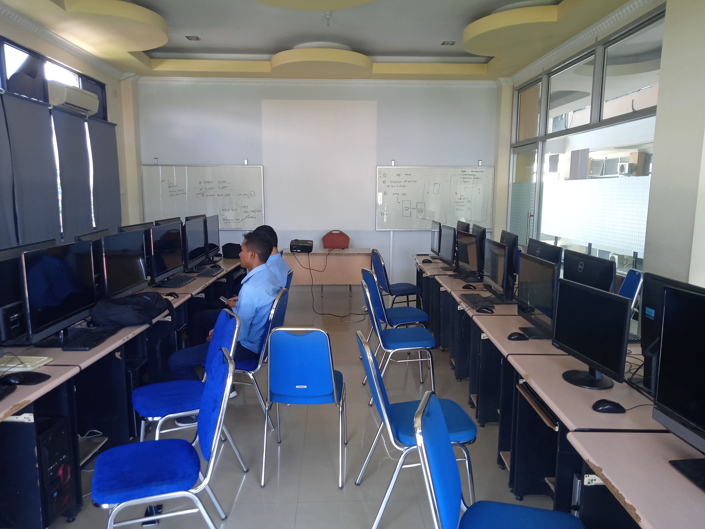
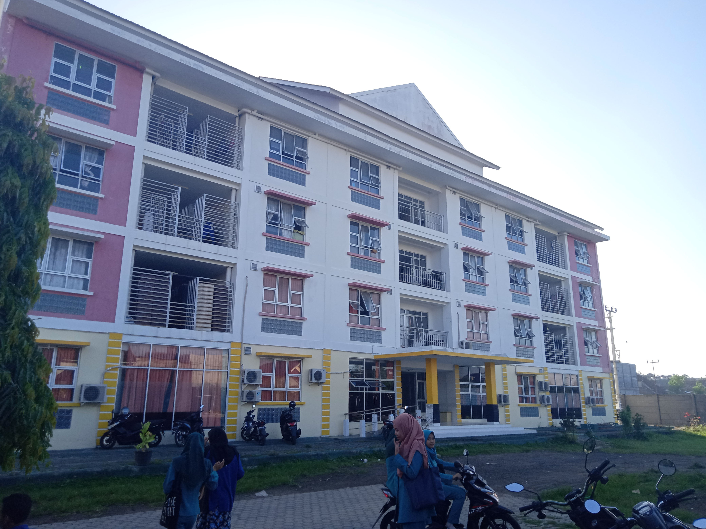
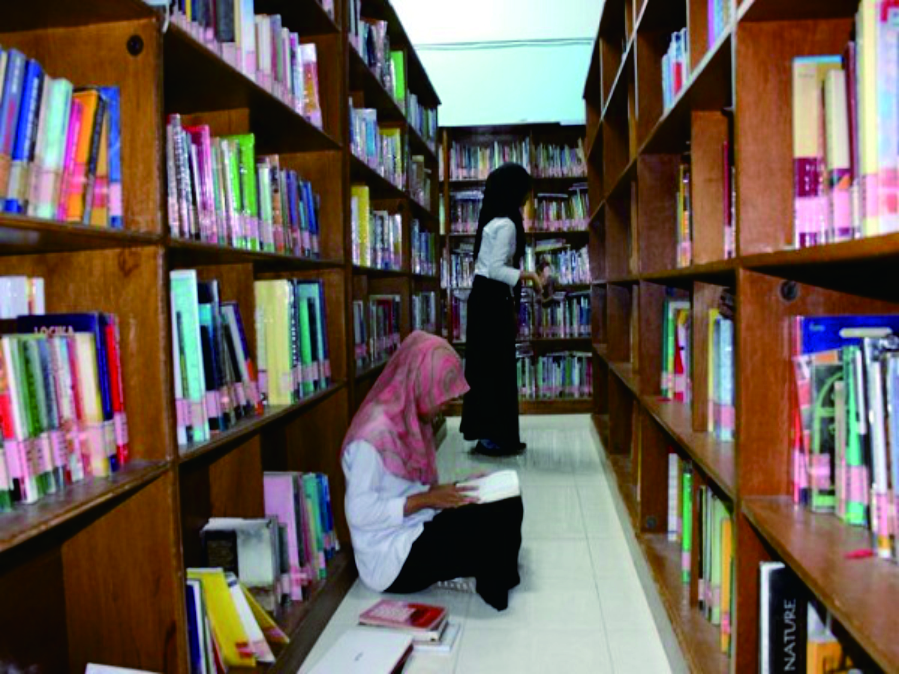
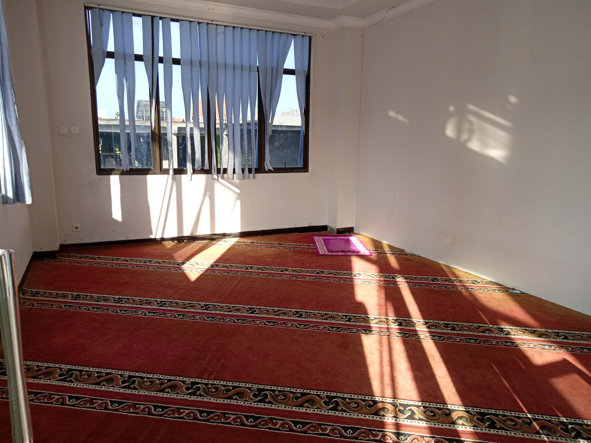
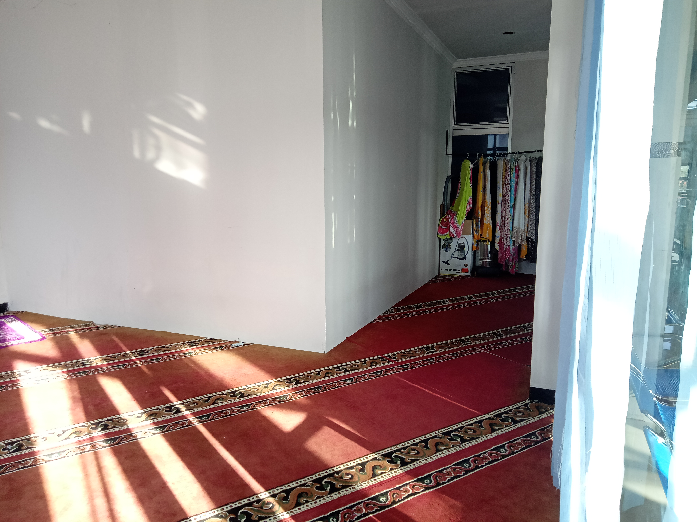

Visi & Misi
Visi
Unggul dan berdaya saing secara Nasional di bidang informatika yang menghasilkan lulusan yang kompeten, memiliki semangat pengabdian dan berahlak mulia pada tahun 2031.
Misi
- Menyelenggarakan proses pendidikan, penelitian, dan pengabdian pada masyarakat berbasis Teknologi Informasi dan Komunikasi (TIK).
- Mengembangkan tenaga kompeten yang berdaya saing sesuai dengan kebutuhan Stakeholder serta mampu mengembangkan dan menyebarluaskan ilmu pengetahuan dan teknologi yang bermanfaat bagi kehidupan masyarakat.
- Membangun kerjasama dengan Stakeholder baik di tingkat Nasional maupun Internasional.
- Mengembangkan lulusan yang mampu menerapkan etika profesi dan memlika kepribadian ahlak yang mulia didasarkan pada Iman dan Takwa.
Fasilitas
Fasilitas merupakan salah satu hal terpenting untuk menunjang kenyaman bagi mahasiswa, dosen beserta staf yang Lainnya selama proses perkuliahan.
Lab
Setiap ruangan terdapat AC sehingga menjadikan kenyaman belajar bagi mahasiswa. Adapun beberapa lab yang disediakan di Universitas Teknologi Mataram, diantaranya :
- Lab. Pemrograman
- Lab. Jaringan
- Lab. Aplikasi
- Lab. Multimedia
- Lab. Bahasa Inggris
Rusunawa
Rumah Susun Sewa atau sering disebut dengan RUSUNAWA
adalah salah satu fasilitas yang disediakan oleh kampus khusus
untuk Mahasiswa. harga sewanya pun bersahabat, cukup dengan mengeluarkan Rp. 200.000/bulan
Mahasiswa langsung bisa menempati kamar RUSUNAWA. Dan seperti terlihat pada fhoto diatas,
RUSUNAWA terdiri dari 4 lantai.
Perpustakaan
Dengan adanya perpustakaan diharapkan mampu menjadi refrensi bagi Mahasiswa/i untuk mengerjakan tugas sehari-hari maupun dalam mengerjakan Karya Tugas Akhir dan Skripsi bagi semester tua. Perpustakaan ini pun cukup luas, bersih dan nyaman untuk belajar.
Musholla
 Di Universitas Teknologi Mataram disediakan juga Musholla untuk melaksanakan kewajiban bagi Dosen dan Mahasiswa/i yang muslim. Dan disediakan pula perlengkapan sholat seperti sajadah dan Mugnah untuk mahasiswi.
Tentang
Universitas Teknologi Mataram yang disingkat dengan UTM adalah Universitas swasta di Kota Mataram yang berdiri tanggal 29 Juli 2019. Universitas Teknologi Mataram berada dibawah Naungan Yayasan Lembaga Pendidikan Darma Bakti. Universitas Teknologi Mataram merupakan gabungan dari Sekolah Tinggi Manajemen Informatika Komputer Mataram (STMIK Mataram) dan Akademi Sekretari dan Manajemen Mataram (ASM Mataram).
Izin penggabungan Sekolah Tinggi Manajemen Informatika Komputer Mataram dan Akademi Sekretari dan Manajemen Mataram menjadi Universitas Teknologi Mataram di Kota Mataram Provinsi Nusa Tenggara Barat yang diselenggarakan oleh Yayasan Lembaga Pendidikan Darma Bakti dikeluarkan oleh RISTEKDIKTI dengan Nomor Peraturan 660/KPT/I/2019, tanggal penetapan 29 Juli 2019. Saat ini Universitas Teknologi Mataram pun dengan Motto TECHNO UNIVERSITY yang berati menciptakan lulusan yang tidak hanya sebagai pencari kerja melainkan sebagai pencipta lapangan kerja khususnya dibidang Teknologi sesuai dengan revolusi industri 4.0 saat ini.
Berikut adalah jurusan yang ada di Universitas Teknologi Mataram
- S1 Hukum
- S1 Manajemen
- S1 Teknik Informatika
- S1 Sistem Informasi
- S1 Teknologi Informasi
- S1 Rekayasa Perangkat Lunak
- S1 Rekayasa Sistem Komputer
- D3 Manajemen Informatika
- D3 Komputerisasi Akuntansi
- D3 Teknik Komputer
- D3 Manajemen Administrasi
- D3 Sekretari